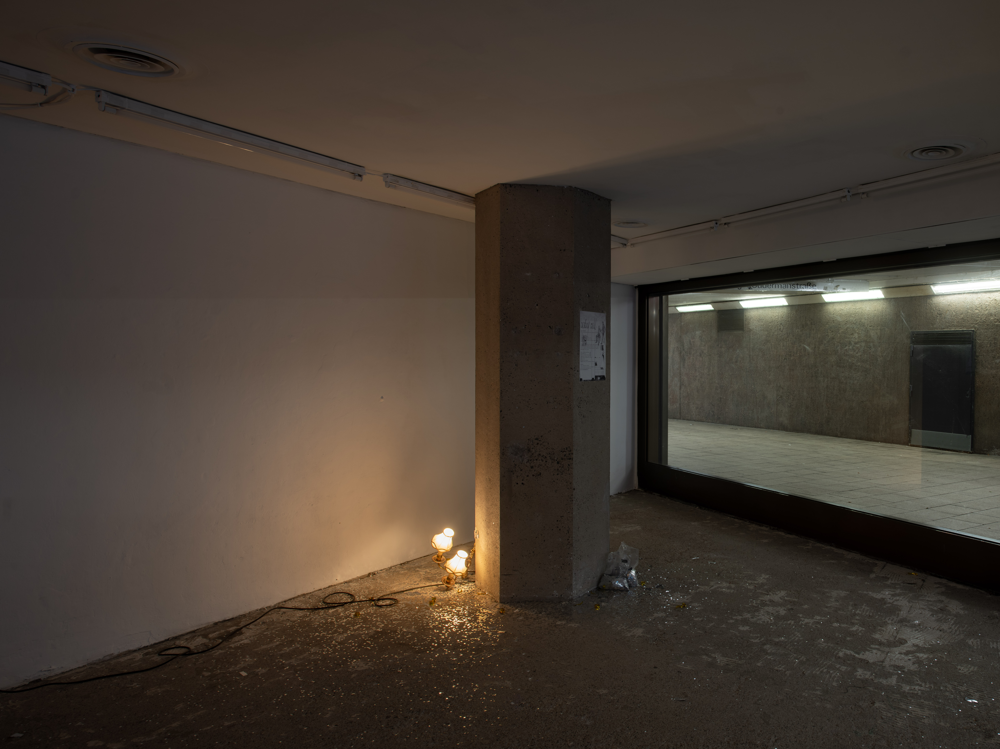
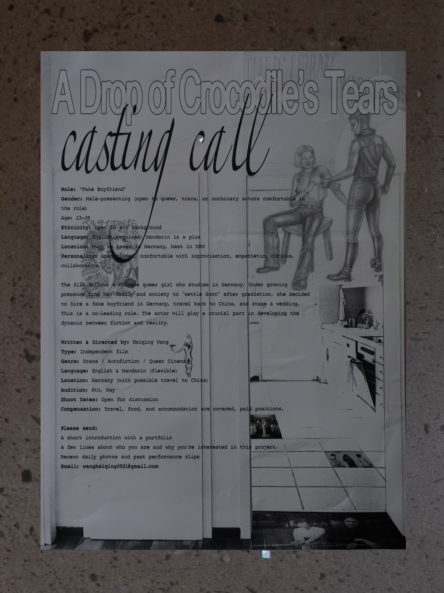
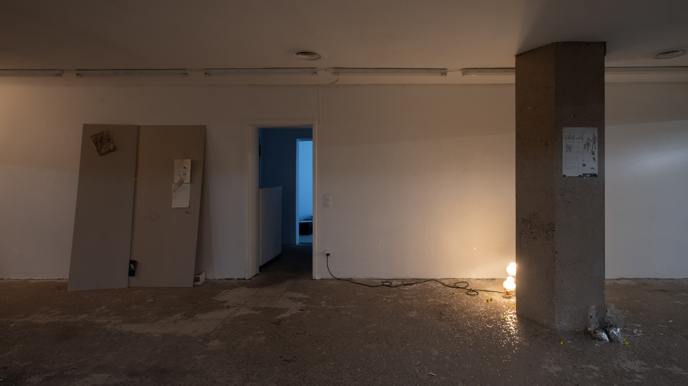
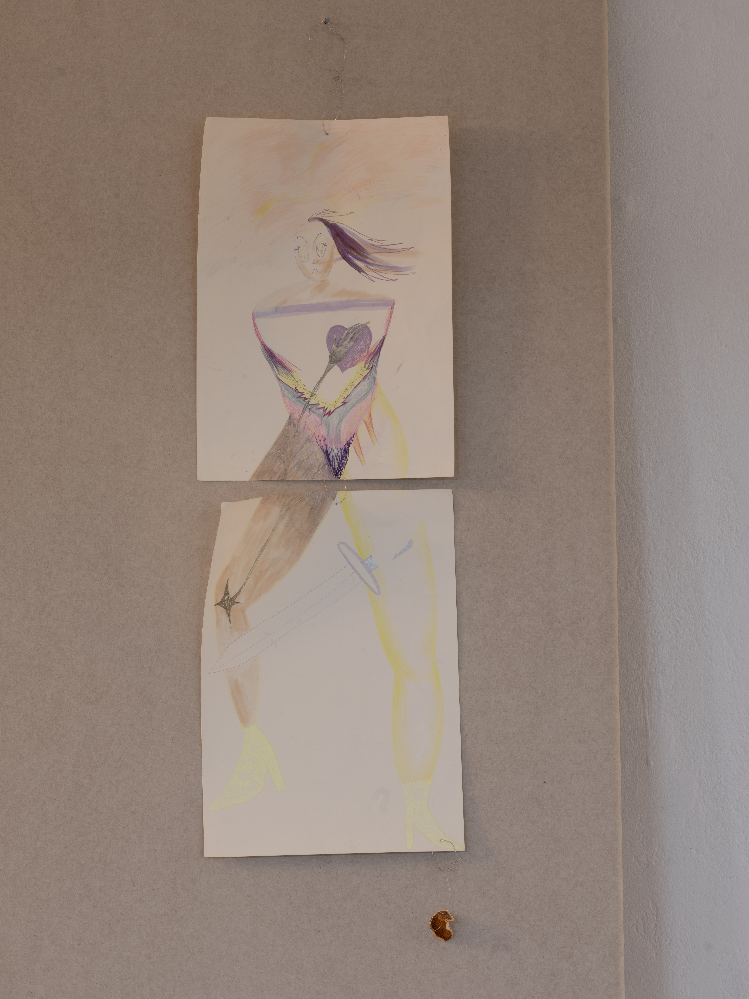
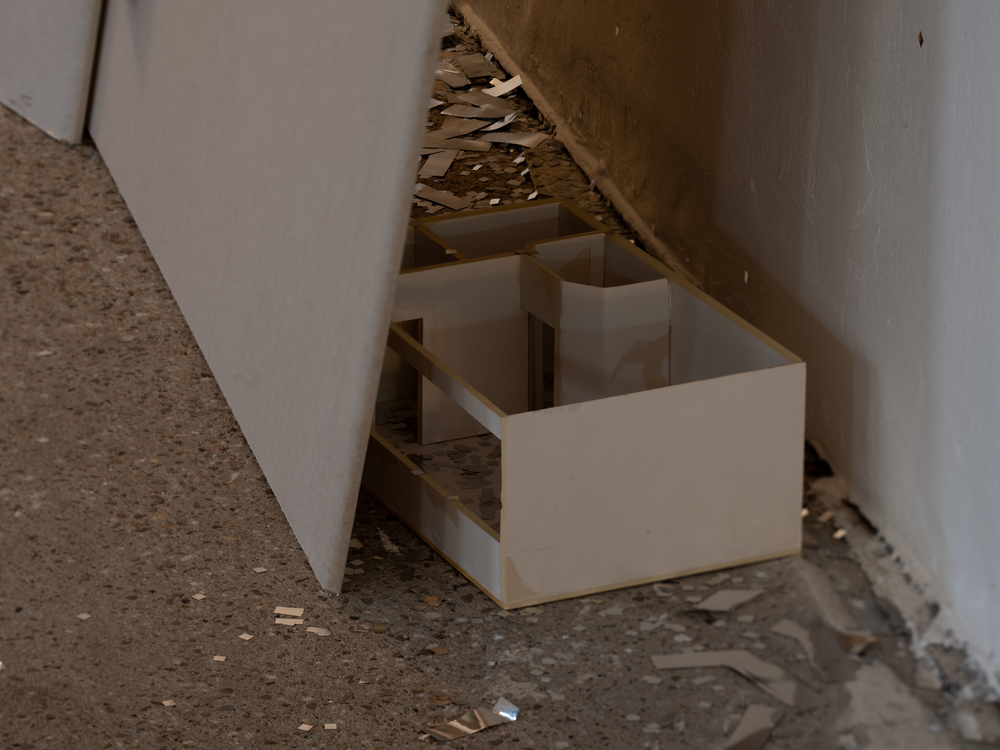
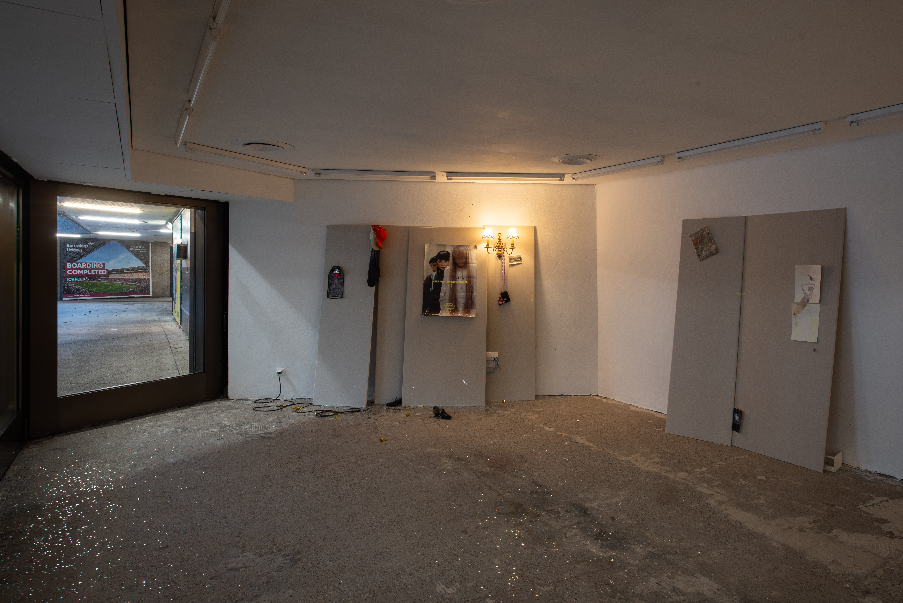
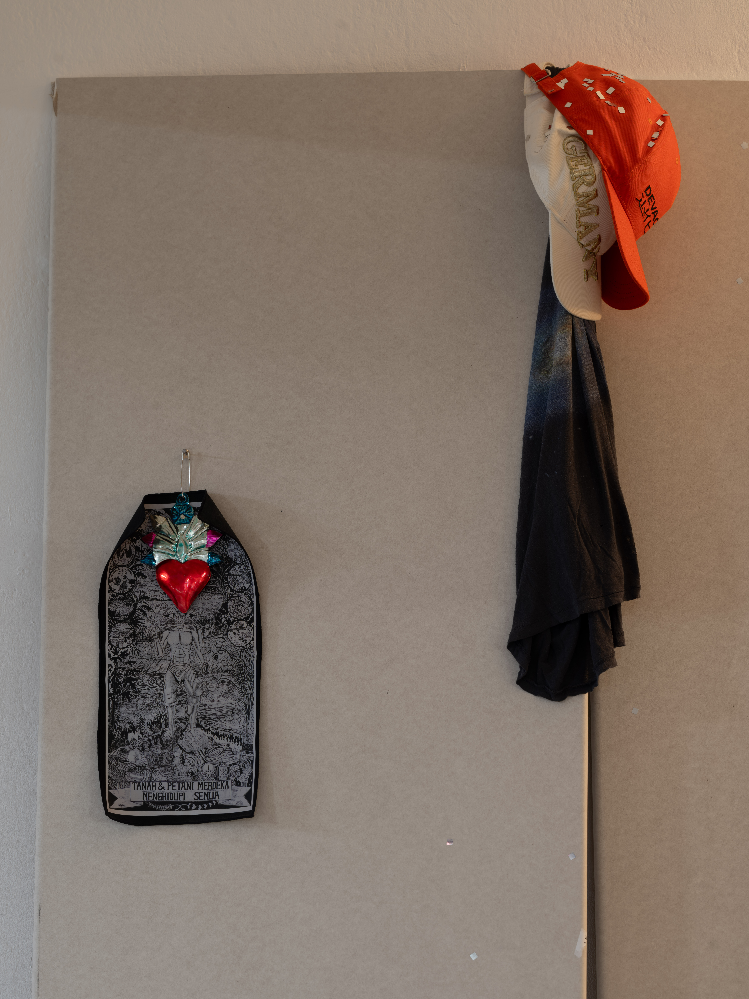
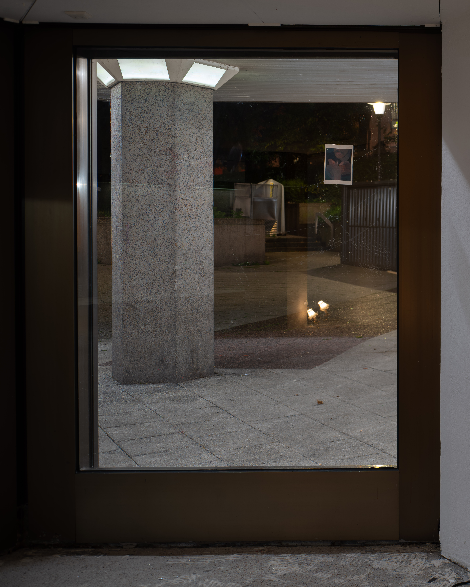
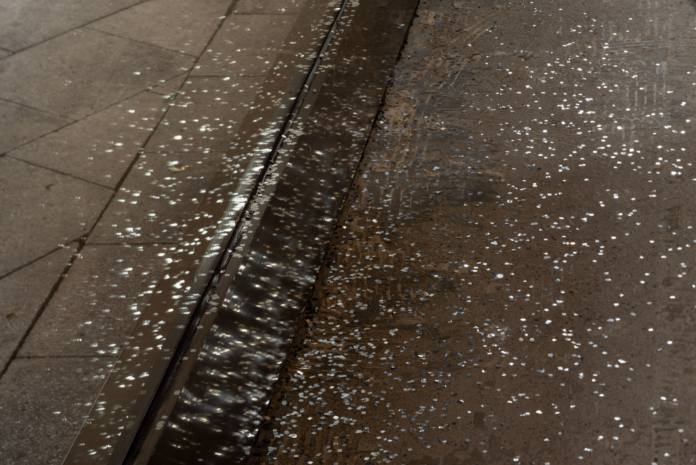
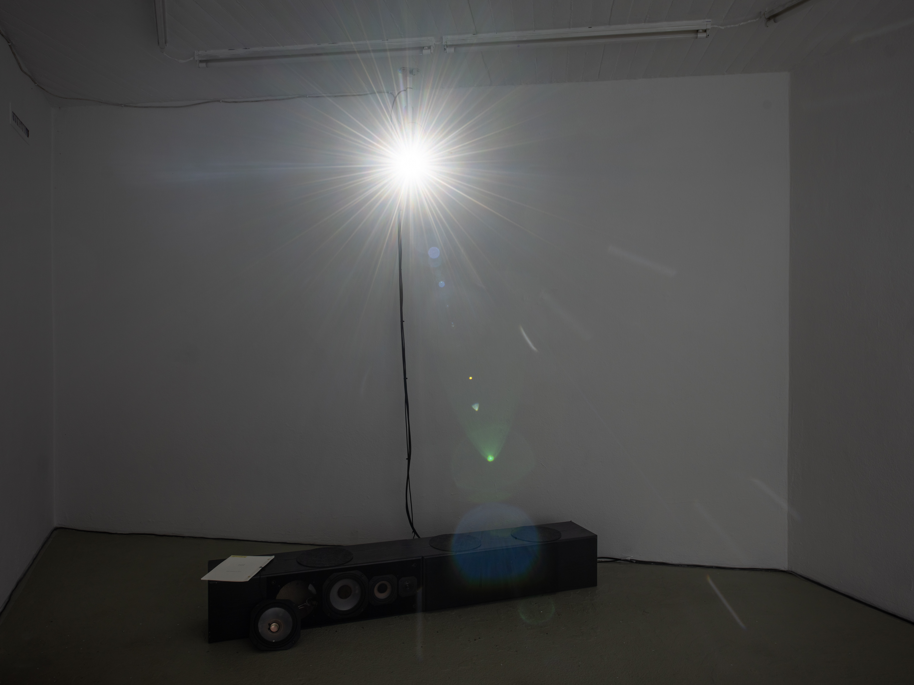

At Mouches Volantes
What is the difference between in and out? Can borders or walls define, separate, protect or hide anything? Or is everything porous, impossible to split, inevitably fluid?
Haiqing Wang explores the endless scenarios that are taking place around us and the multitudes of interpretations given by individuals and collective entities. Using the frame of a movie, its set, its casting and furniture, the artist invites us to delve into our own intimate sceneries and what they might reveal about our personal architecture.
With the ethereal presence of discreet protagonists, she reveals how others shape and influence us. And because “I is Somebody Else” (Rimbaud), the works invite us to consider the impact of our own self-expectation and psychological projections on our inner construction. True Story & Other Stories... also presents the dissolution of the artist’s role—as author, as actress, as subject—into the unresolved status of the work between fiction and nonfiction.
In Haiqing’s installation, concrete and immaterial locations seem to decompose gradually and come together to form a vague but generous space to grasp these notions. Scales merge, allowing for a variety of perspectives: internal (found-object sculptures), external (reduced model), omniscient (film)... In fact, her work multiplies in-between spaces: where things are held in balance and indecision, like a rehearsal—before a film, before a marriage, before commitment. Thus, there are of course the notions of displacement, of bodies, of gaze and their effects on one’s relationships to space, time and society, provoking the necessary creation, ex nihilo, of new anchors into an unknown landscape.
How can one attempt to compose and transform one’s own narrative in a new backdrop without undermining constitutive parts of their identity rooted in another space-time?
– Adèle Anstett



poster, 2025





plasterboard, two double wall lamps, and objects originally displayed on the wall in my home, 2025

plasterboard, two double wall lamps, and objects originally displayed on the wall in my home, including (from left to right): a birthday postcard from Mara with an image of a painting by Xinyi Chen; a metal heart from the Gropius Bau gift shop; a print by Taring Padi bought at documenta fifteen; an Acne Studios T-shirt with a galaxy print; an orange cap from DevolutioN; a white cap printed with the word “Deutschland”; a pair of unworn vintage shoes; a poster from a Gisèle Vienne exhibition; a brand-new baby blue Fender cable; a McDonald’s Hello Kitty collectible toy and a coin purse bought on Taobao; a postcard sent by Zhaoyue Fan from the Bibliothek Andreas Züst, 2025




selected confetti scattered on the floor, 2025

single-channel video, black and white, sound,
32:46, 2025